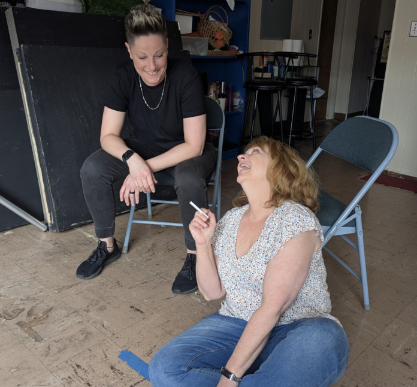

Curtain Call: Roommates, Regrets and Reinvention
Have you ever wondered what it'd be like if Dorothy and Blanche from The Golden Girls spent less time eating cheesecake and a lot more time getting into the types of exploits you'd expect from “Slippin' Jimmy” in Better Call Saul?